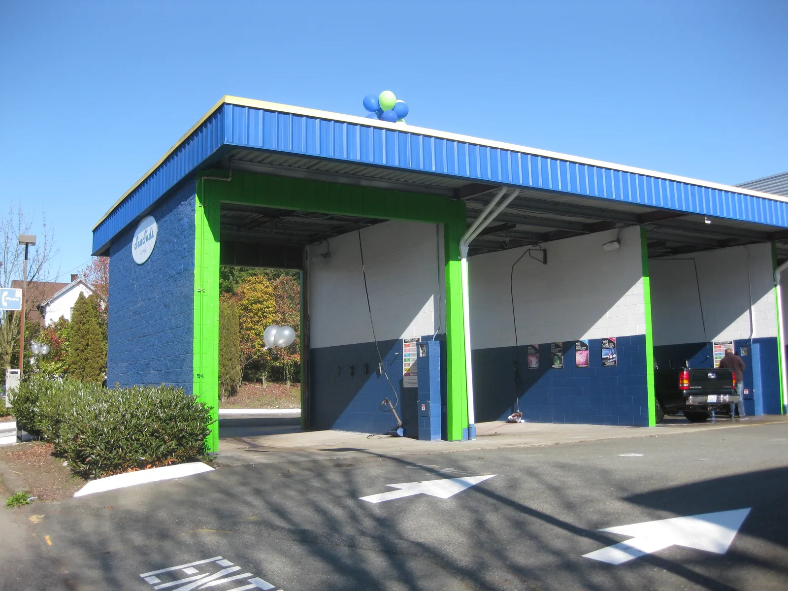
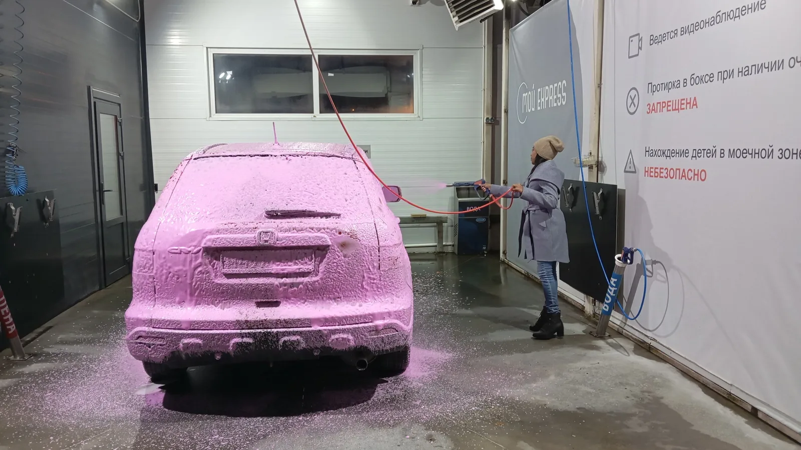

▲ 자동세차기의 회전 브러시. 편리하지만 도장면 보호 측면에서는 가장 불리하다는 평가다 ⓒ Wikimedia Commons (CC BY-SA 4.0)
세차는 가장 흔한 자동차 관리 행위이면서도, 방식에 따라 도장면에 미치는 영향이 극과 극으로 갈린다. 특히 가장 편리하고 대중적인 방식이 하필 가장 불리한 방식이라는 점이 아이러니하다.
1. 자동세차 — 편리함의 대가

▲ 셀프 세차장 외관. 브러시형 자동세차와 달리 세차 도구가 개인별로 분리돼 있다 ⓒ Wikimedia Commons (CC BY-SA 2.0)
브러시형 자동세차기의 근본적인 문제는 세차 브러시를 여러 차량이 돌려 쓴다는 구조에 있다. 이전 차량에서 묻은 흙먼지나 모래 입자가 브러시에 남은 채로 다음 차량을 닦게 되는데, 고압수를 쏴도 이 이물질이 씻겨나가는 시간은 찰나에 불과하다. 그 결과 세차기를 통과할 때마다 도장면에 눈에 잘 띄지 않는 미세 흠집, 이른바 스월마크(원형 스크래치)가 누적된다. 검정색이나 짙은 색상 차량일수록 표면에 이런 흠집이 도드라져 보인다.
2. 셀프세차 — 지식이 있다면 가장 합리적

▲ 셀프세차 중인 차량. 거품 세정 후 고압수로 헹구는 과정이 도장면 손상을 최소화한다 ⓒ Wikimedia Commons (CC BY 4.0)
세차 지식과 차량에 대한 애정을 갖춘 사람이 진행하는 셀프세차는, 손세차나 자동세차 대비 도장면 손상을 최소화하면서 광택을 오래 유지하는 데 유리하다는 평가를 받는다. 다만 주의할 점이 있다. 고압수를 도장면에 너무 가까운 거리에서 분사하면 오히려 몰딩이나 도장면이 손상될 수 있다. 30cm 이상의 거리를 유지하고, 위에서 아래로 세척하는 순서를 지키는 것이 안전하다.
3. 손세차 — 안전하지만 방법이 관건
사람이 직접 부드럽게 문질러 닦는 손세차는 기스 위험이 상대적으로 적은 방식으로 꼽힌다. 다만 이 역시 무조건 안전한 것은 아니다. 세정력이 떨어지는 낡은 타월을 재사용하거나, 흙먼지를 미리 씻어내지 않고 곧바로 문지르면 오히려 스크래치를 유발할 수 있다. 결국 손세차의 안전성은 '손으로 한다'는 사실 자체보다 올바른 순서와 도구 관리에 달려 있다.
4. 선호도 — 편의성이 안전성을 이긴다
▲ 셀프 세차장 이용 모습. 접근성과 비용 부담이 낮아 선호도가 가장 높은 방식이다 ⓒ CarPrism
실제 소비자 선호도 조사에서는 셀프세차가 47%로 가장 높았고, 자동세차가 38%, 손세차는 15%에 그쳤다. 이는 도장면 보호 우선순위와는 정반대의 순서다. 시간과 비용, 접근성이라는 현실적인 제약이 도장면 보호라는 이상적인 기준보다 실제 선택에 더 큰 영향을 미친다는 뜻으로 해석할 수 있다.
5. 정리
체크포인트
- 도장면 보호만 놓고 보면 손세차 > 셀프세차 > 자동세차 순이다.
- 브러시형 자동세차는 스월마크 위험이 가장 크다.
- 셀프세차는 고압수 거리(30cm 이상)만 지키면 합리적인 선택이 된다.
- 실제 이용률은 셀프세차가 47%로 1위다.